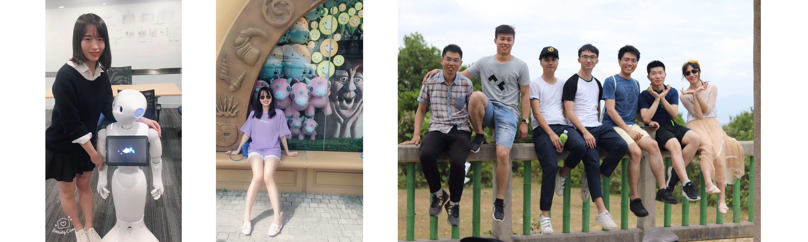

Meng Xia
|  | 夏梦 (Meng XIA, Iris) Ph.D candidate Supervisor 1: Prof. Huamin Qu Supervisor 2: Dr. Xiaojuan Ma Computer Science & Engineering Hong Kong University of Science and Technology E-mail: iris.xia at connect.ust.hk |
Research topics
Publications
Meng Xia, Mingfei Sun, Huan Wei, Qing Chen, Yong Wang, Lei Shi, Huamin Qu, Xiaojuan Ma, PeerLens: Peer-inspired Interactive Learning PathPlanning in Online Question Pool, CHI 2019 (Conditionally accepted)
夏梦, 张荣, 彭韧, 于金辉, 用线描图生成唐卡浮雕, SCIENTIA SINICA Informationis 2018
Ke Xu, Meng Xia, Xing Mu, Yun Wang, Nan Cao, EnsembleLens: Ensemble-based Visual Exploration of Anomaly Detection Algorithms with Multidimensional Data, TVCG 2018
Zhenhui Peng, Jeehoon Yoo, Meng Xia, Sunghun Kim, Xiaojuan Ma, Exploring How Software Developers Work with Mention Bot in GitHub, Chinese CHI 2018
Mingfei Sun, Yiqing Mou, Hongwen Xie, Meng Xia, Michelle Wong, Xiaojuan Ma, Estimating Emotional Intensity from Body Poses for Human-Robot Interaction, IEEE SMC 2018, demo
冯元力, 夏梦, 季鹏磊, 周潇, 曾鸣 刘新国, 基于球面深度全景图的三维形状识别, 计算机辅助设计与图形学学报 2017
张英烈， 夏梦，陈临强， 基于视频跟踪的体感游戏设计, 计算机工程与应用 2015
Education
Ph.D., Computer Science & Engineering, Hong Kong Unverisity of Science and Technology (HKUST), 2017.08 – Present
M.E, Computer Science, Zhejiang University), 2014.08 – 2017.06
B.E., Computer Science, Hangzhou Dianzi Unversity), 2009.08 – 2013.06
Teaching
Teaching Assistant at HKUST for:
Computer Organization, Spring 2018
Computer Organization, Fall 2018
Contact